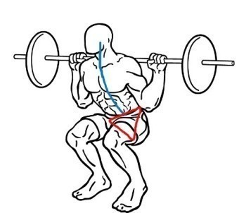

스쿼트 (Squat)
무산소 운동 중 하나로 데드리프트, 벤치 프레스와 더불어 웨이트 트레이닝의 3대 운동 중 하나이다. 특히 하체운동에서는 '알파이자 오메가'인 운동이다.
주의할 점
잘못된 자세, 무리한 스쿼트로 인해 다치는 부위는 흔히 무릎과 꼬리뼈부분(요추) 부상이 있다. 그 외에도 횡문근융해증에 걸릴 수도 있는데, 증세 자체는 운동을 무리하게 하면 발병하지만 스쿼트가 다른 운동에 비해 운동강도가 워낙에 높다보니 위험성이 더 높다. 보디빌더조차도 한순간의 실수로 부상을 입을 수 있는 운동인 만큼 선행연습과 자세교정 등등 주의가 각별히 필요하다.
스쿼트하는 방법